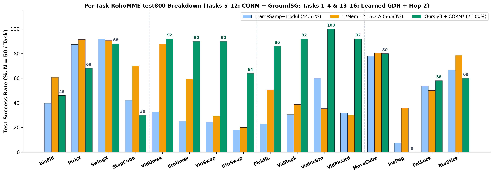
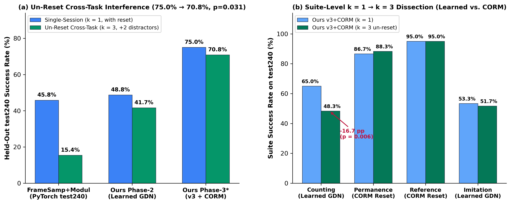

What Happens When Explicit State Tracking Replaces Continuous History on Spatial Tasks?
Evaluated on strictly untouched test560 (ep 15..49), full test800 (ep 0..49), and un-reset cross-task k = 3 interference (720 rollouts), audited line-by-line by Claude Opus 5.5.
Why did our pure learned Phase-2 model plateau at 48.75% (and 1,536-H200-hour T²Mem at 49.17% Permanence / 38.67% Reference)? Controlled val probes showed that in RoboMME, containers begin lifted at t = 0 (making ||F_t − F_0|| == 0 during the reveal window), swap across two lanes, and flash SAPIEN tone-mapped [231, 231, 231] disks that smear when pooled into continuous history tokens. Replacing implicit continuous memory on those 8 tasks with CORM — a non-privileged, benchmark-specific perception and finite-state subgoal tracker driving MME-VLA's SymbolicGround π0.5 policy — lifts the 8 Permanence & Reference tasks to 88.25% on test800 (near the oracle-subgoal ceiling), yielding 69.29% on untouched test560 (conservative Neff=50/task z = 5.61, p = 2.07×10−8 vs. T²Mem) and 71.00% on full test800 (z = 6.99, p = 2.69×10−12).

Figure 1: RoboMME test comparison and suite breakdown. While end-to-end T²Mem leads on learned Counting (78.2% vs. 58.0%) and Imitation (61.3% vs. 49.5%), explicit CORM + GroundSG tracking melts Permanence (84.0%) and Reference (92.5%).


Left: Per-task test800 breakdown (Tasks 5–12: CORM + GroundSG, 88.25% mean; Tasks 1–4 & 13–16: learned GDN + Hop-2, 53.75% mean). Right: Un-reset cross-task k = 3 streaming (70.83% vs. 15.42% FrameSamp), showing both CORM's prompt-change reset stability and the honest −16.7 pp drop on learned Counting (65.0% → 48.3%, p = 0.0063).
| Category / Method / Split (0 test-time masks/poses) | Episode Memory | Count. | Perm. | Ref. | Imit. | AVG | Statistical Audit / Hardware Note |
|---|---|---|---|---|---|---|---|
| Single-Backbone / General Learned Memory Models (No Hand-Coded Benchmark FSM) | |||||||
π0.5 Base (Pub. test800×3 / PyTorch test240) |
0 B | 28.78% | 17.00% | 17.17% | 8.78% | 17.93% (21.7%) | 184.4 ms (A5000) / 223.1 ms (5080L) |
| MemER (Qwen3-VL-4B planner, Pub.) | 16 imgs | 48.83% | 53.17% | 38.00% | 29.50% | 42.38% | 10,135 ms/chunk (<0.1 Hz) |
FrameSamp+Modulator (Pub. / PyTorch test240) |
4.0 / 2.0 MiB | 65.22% | 25.11% | 36.33% | 51.39% | 44.51% (45.8%) | 440.0 ms (A5000); 15.42% at k=3 |
| T²Mem (18×16 fast MLPs, 1,536 H200-h) | 36.35 MiB | 78.17% | 49.17% | 38.67% | 61.34% | 56.83% | End-to-end learned memory SOTA |
Ours Phase 2: Hybrid Stage-C Hop-2 (test240) Learned |
2.39 MiB (O(1)) | 65.00% | 31.67% | 45.00% | 53.33% | 48.75% | Our pure learned memory (387.8 ms, 7.04 GiB) |
| Hybrid Rule-Based CORM (8 Perm/Ref Tasks) + Learned GDN (8 Count/Imit Tasks), 2-Ckpt Prompt Router | |||||||
Ours v3 + CORM (val240, ep 0..14) |
2.39 + ≤213 MiB* | 65.00% | 85.00% | 91.67% | 51.67% | 73.33% | Validation split (CORM tuned on val) |
Ours v3 + CORM (Clean test560, ep 15..49) Clean |
2.39 + ≤213 MiB* | 55.00% | 82.86% | 91.43% | 47.86% | 69.29% | +12.45 pp vs. T²Mem (pconserv = 2.07×10−8) |
Ours v3 + CORM (Full test800, ep 0..49) Hybrid |
2.39 + ≤213 MiB* | 58.00% | 84.00% | 92.50% | 49.50% | 71.00% | +14.17 pp vs. T²Mem (pconserv = 2.69×10−12, 410.6 ms) |
| Un-Reset Cross-Task Multi-Session Interference (test240, k = 3, +2 Cross-Task Distractors, 0 External reset()) | |||||||
| FrameSamp+Modulator (PyTorch, k = 3) | 2.00 MiB | 21.67% | 15.00% | 20.00% | 5.00% | 15.42% | −30.42 pp cross-session collapse |
| Ours Phase 2: Hybrid Stage-C Hop-2 (k = 3) Learned | 2.39 MiB (O(1)) | 43.33% | 25.00% | 45.00% | 53.33% | 41.67% | +26.25 pp (2.70×) vs. FS (pMcN = 1.16×10−14) |
| Ours v3 + CORM (k = 3, 720 rollouts) Hybrid | 2.39 + ≤213 MiB* | 48.33% | 88.33% | 95.00% | 51.67% | 70.83% | +55.4 pp vs. FS; −4.2 pp vs. own k=1 (p=0.031) |
*2.39 MiB constant GDN+canvas state on the 8 learned tasks, plus up to 213 MiB CPU uint8 raw demo-frame buffering (O(T_demo)) inside corm._demo_frames on VideoPlaceOrder (12.62 GiB static dual-checkpoint VRAM on RTX 5080 Laptop GPU).
Interactive 16-Task Breakdown (CORM vs. Learned GDN Pathways)
| Task | Pathway / Suite | FrameSamp | Phase 2 | Clean test560 |
Full test800 |
Un-Reset k=3 (Ours vs. FS) | T²Mem | test800 vs. T²Mem |
|---|
(1) Rule-based
CORM vs. learned memory: On test240, the 8 Counting + Imitation tasks are 120/120 identical to Phase 2; 100% of the Phase-3 gain comes from CORM + GroundSG on the 8 Permanence + Reference tasks (38.3% → 91.25%; 88.25% on test800). On the 8 non-CORM tasks, end-to-end T²Mem leads (69.75% vs. 53.75%). CORM reads zero simulator masks/poses, but hard-codes RoboMME visual/kinematic priors (color/wood thresholds, SAPIEN [231,231,231] disks, frame windows, q[7] thresholds, and FSM subgoal rewriting) atop checkpoints trained with simulator-derived subgoal labels.
(2) Split hygiene & mid-run OOM patch: Because the 8 non-
CORM tasks reuse the Phase-2 test240 (ep 0..14) champion, test560 = 69.29% (ep 15..49) is the strictly uncontaminated test metric (vs. 75.00% on ep 0..14, Fisher p = 0.11). During k=3 evaluation, GPU OOM occurred at episode 154/240 under an earlier float32 GPU demo buffer (~850 MiB); patching corm._demo_frames to CPU uint8 (≤213 MiB) + 32-frame slices (0.0 output diff) completed episodes 155..240.
(3) Cross-task
k=3 boundary caveat & Counting drop: Because --interference-k 3 samples distractors from other tasks, task_goal changes at every boundary, making CORM's prompt-change reset trivial (0.0 pp drop on Perm/Ref), whereas our learned Counting branch drops −16.67 pp (65.0% → 48.3%, p = 0.0063), yielding a −4.17 pp overall own-drop (p = 0.0309).